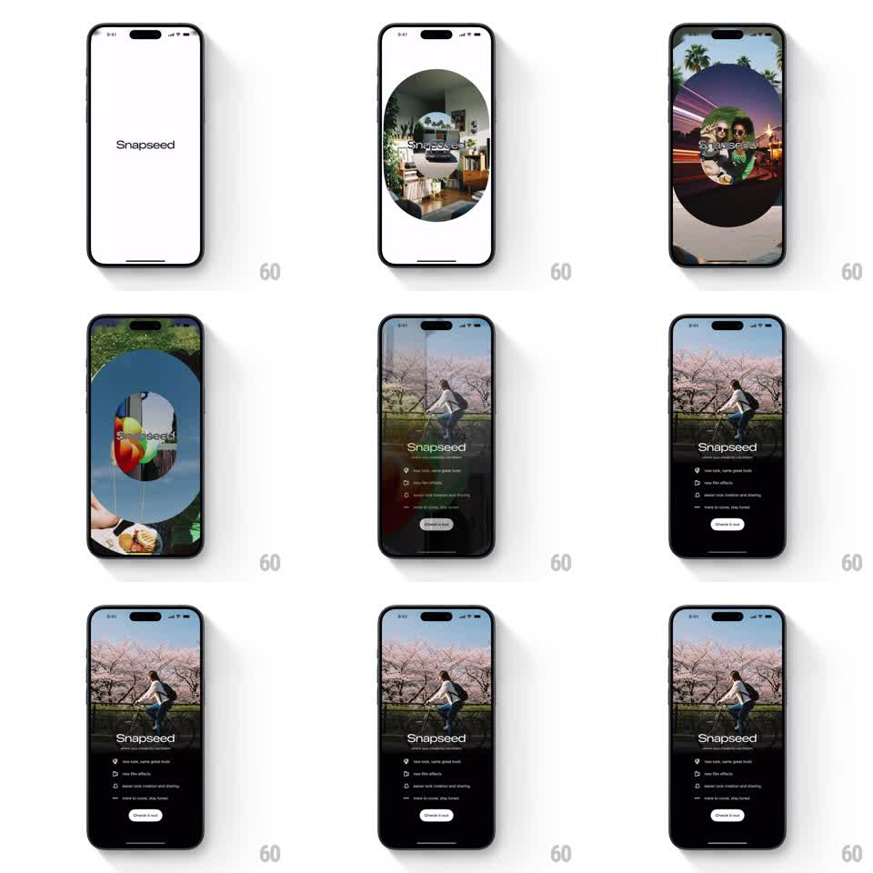

Media
Frame-by-frame

Rebuild this animation 1:1: Snapseed's splash - the wordmark on white, then a small masked window expands from center into a full-screen photo, followed by a staggered dark bottom sheet with the feature list and a Check it out button.

Rebuild this animation 1:1: Snapseed's splash - the wordmark on white, then a small masked window expands from center into a full-screen photo, followed by a staggered dark bottom sheet with the feature list and a Check it out button.
## Integration
Integration: stack-agnostic spec - springs given as stiffness/damping, timed motions as duration + curve; map every value to your framework and animation library of choice.
## Scene
White splash with "Snapseed" centered. The mask: a small centered circle/oval that reveals a photo (a cyclist under cherry blossoms) and grows. The end state: the photo full-bleed, a dark bottom sheet sliding up with the wordmark, a feature list ("new look, same great tools", "new film effects", "easier tools creation and sharing", "swipe to cover, stay tuned" - each with a small icon), and a white "Check it out" pill.
## Motion spec
Pattern: expanding mask reveal with a staggered sheet.
- Wordmark holds on white (500ms), then a small circular mask appears at center revealing the photo (200ms) and expands (scale to full screen, 600ms, ease-in-out) - the photo inside scales down slightly (1.15 -> 1) as the mask grows, a subtle Ken Burns counter-move.
- Mid-expansion the mask's shape eases from circle to the full rounded-rect of the screen.
- The dark bottom sheet slides up over the photo (spring ~300/24, from 40% height) once the mask completes.
- Sheet contents stagger in: wordmark (fade+rise 250ms), then feature rows (60ms apart, fade+rise 200ms), then the Check it out button (fade+rise 250ms, ending with a soft glow pulse).
- The photo keeps a barely-visible drift (translateY -8pt over 8s) behind the sheet.
## Calibration
- The mask expansion is the hero: perfectly centered, constant border-radius interpolation, no jumps.
- Sheet rows are short and icon-led; the stagger makes them readable in sequence.
## Reduced motion
Photo fades in full-screen (400ms); sheet fades up (250ms); rows appear together.
## Don't miss
- The photo must fill edge to edge at the end - the mask completes, it does not stop short.
- "Check it out" is the only light element on the dark sheet.